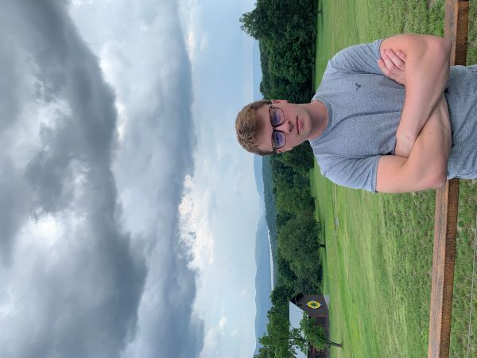

Hi, I'm Chris!
Software Developer & Engineer
Welcome to my website! Here you will find all information one could possibly know about me as well as some independent projects I've worked on my freetime.
About Me
I am currently a computer science major with a double major in applied mathematics and a specialization in artificial intelligence.
My dream job would be to use my experience to create video games at a successful company, though I hope to someday do something revolutionary with AI. The reason for my interest in computer science came from my life-long experience of playing video games which have left a huge impact on my life.
Besides video games, I like to workout, play soccer with my friends, and code any ideas that come to my mind.
Some Pics Of Me
- 
-

-

-